Ontwerpen
Leerdoel 2:
Ik wil na afloop van mijn stage een contextdiagram kunnen opstellen volgens de kwaliteitseisen van het bedrijf.
Bewijslast
Ik heb een contextdiagram opgesteld waarbij ik de grenzen aantoon van onze applicatie. Byewaste is een smartphone App die de gebruikers een ophaalverzoek laat maken om recyclebare afval te laten ophalen door de lokale inzamelaar. In deze context diagram laat ik zien hoe dit proces in zijn werking treedt. Ik toon verschillende datastromen die door verscheidene worden door gegeven en/of verwerkt.
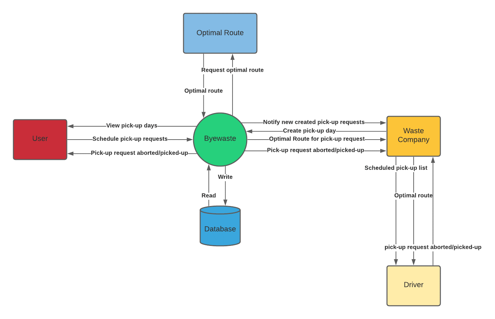
Figuur 1
Feedback
Ik heb mijn collega’s de volgende vragen gesteld via Google formulieren: “Hoe accuraat is dit systeem voor Byewaste?”, “Waarom heb je gekozen voor dit getal?” en “Wat had er beter gedaan kunnen worden?”. Voor de eerste vraag laat ik hen een getal kiezen tussen de 1 en 10, voor de rest van de vragen laten hen uitleggen waarom ze kozen hebben voor dit getal. Voor de context diagram heb ik 2 7’s gekregen en een 8. Het is een goed beeld van het systeem dat we nu hebben.
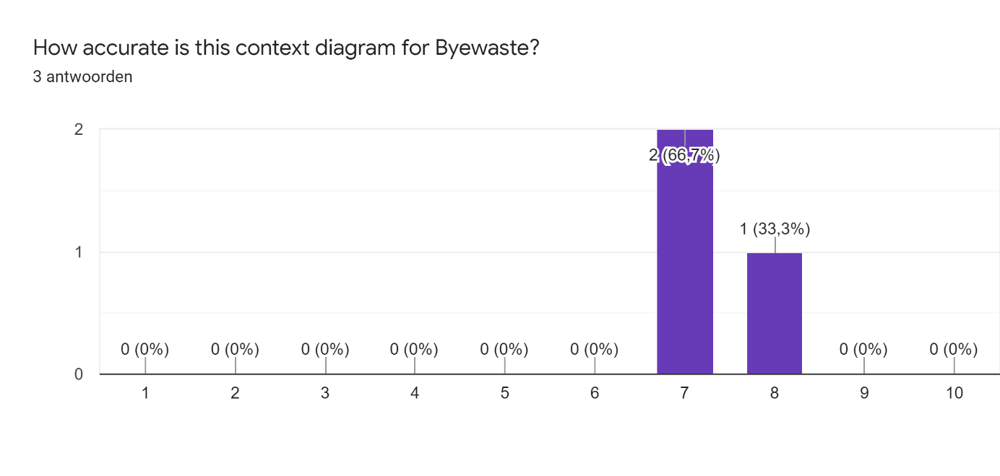
Figuur 2
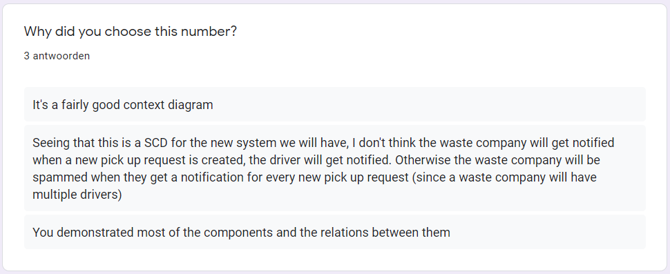
Figuur 3
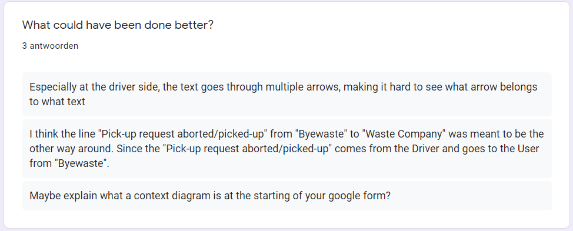
Figuur 4
Zelfreflectie
Mijn collega’s vinden dat ik de context diagram goed heb gemaakt waarbij ik de verschillende entiteiten aantoon en de datastromen tussen hen. Met de feedback die ik van hen heb gekregen heb ik een verbeterde context diagram. Ik toon aan dat er meerdere bestuurders zijn en niet alleen een, wat terug te zien was in het eerste context diagram. Verder heb ik ook een fout gemaakt bij de datastroom van de gebruiker naar Byewaste waar te zien is dat Byewaste het bevestigen/annuleren van een ophaal naar de gebruiker stuurt, maar dat zou anders om moeten zijn. Ook heb ik de volgorde van de datastromen veranderd waarbij ik de datastromen die dezelfde kant op gaan bij elkaar heb gedaan. Dit allemaal heb ik gedaan om de context diagram makkelijker te begrijpen te maken. Voor het tweede punt van figuur 5, was ik het niet mee eens. Dit punt klopt niet aangezien dit zou beteken dat alle ophaalverzoeken ook gezien kunnen worden door inzamelaar (driver) en dit zou niet zo moeten. Het is de lokale afvalverzamelaar (collector) die deze informatie door geeft aan zijn inzamelaars. Ik heb daarom dit punt niet verwerkt.
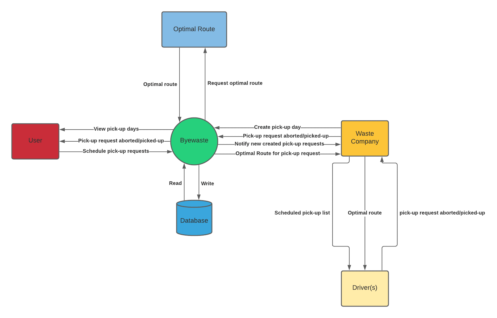
Figuur 5
Ik heb een contextdiagram opgesteld waarbij ik de grenzen aantoon van onze applicatie. Byewaste is een smartphone App die de gebruikers een ophaalverzoek laat maken om recyclebare afval te laten ophalen door de lokale inzamelaar. In deze context diagram laat ik zien hoe dit proces in zijn werking treedt. Ik toon verschillende datastromen die door verscheidene worden door gegeven en/of verwerkt.
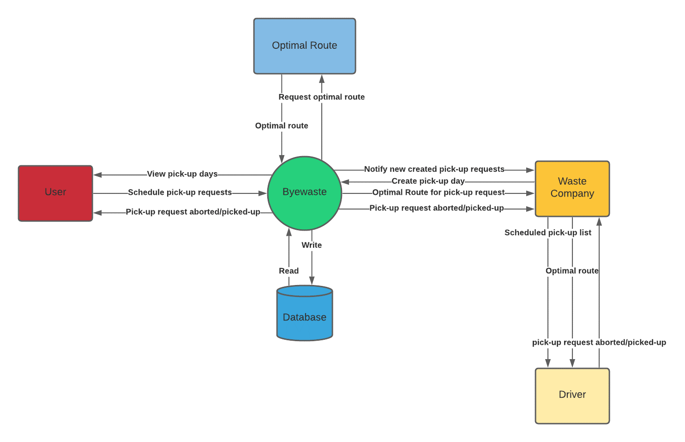
Feedback
Ik heb mijn collega’s de volgende vragen gesteld via Google formulieren: “Hoe accuraat is dit systeem voor Byewaste?”, “Waarom heb je gekozen voor dit getal?” en “Wat had er beter gedaan kunnen worden?”. Voor de eerste vraag laat ik hen een getal kiezen tussen de 1 en 10, voor de rest van de vragen laten hen uitleggen waarom ze kozen hebben voor dit getal. Voor de context diagram heb ik 2 7’s gekregen en een 8. Het is een goed beeld van het systeem dat we nu hebben.
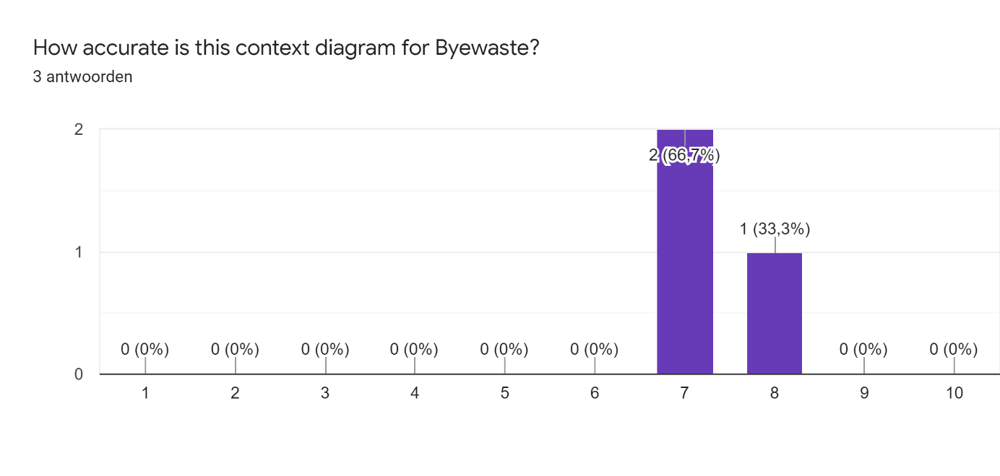
Figuur 2
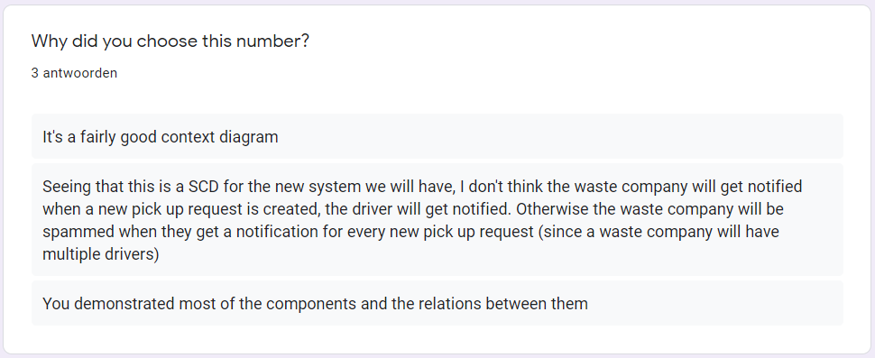
Figuur 3
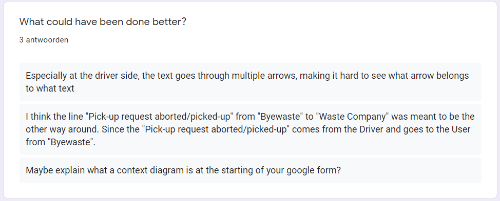
Figuur 4
Zelfreflectie
Mijn collega’s vinden dat ik de context diagram goed heb gemaakt waarbij ik de verschillende entiteiten aantoon en de datastromen tussen hen. Met de feedback die ik van hen heb gekregen heb ik een verbeterde context diagram. Ik toon aan dat er meerdere bestuurders zijn en niet alleen een, wat terug te zien was in het eerste context diagram. Verder heb ik ook een fout gemaakt bij de datastroom van de gebruiker naar Byewaste waar te zien is dat Byewaste het bevestigen/annuleren van een ophaal naar de gebruiker stuurt, maar dat zou anders om moeten zijn. Ook heb ik de volgorde van de datastromen veranderd waarbij ik de datastromen die dezelfde kant op gaan bij elkaar heb gedaan. Dit allemaal heb ik gedaan om de context diagram makkelijker te begrijpen te maken. Voor het tweede punt van figuur 5, was ik het niet mee eens. Dit punt klopt niet aangezien dit zou beteken dat alle ophaalverzoeken ook gezien kunnen worden door inzamelaar (driver) en dit zou niet zo moeten. Het is de lokale afvalverzamelaar (collector) die deze informatie door geeft aan zijn inzamelaars. Ik heb daarom dit punt niet verwerkt.
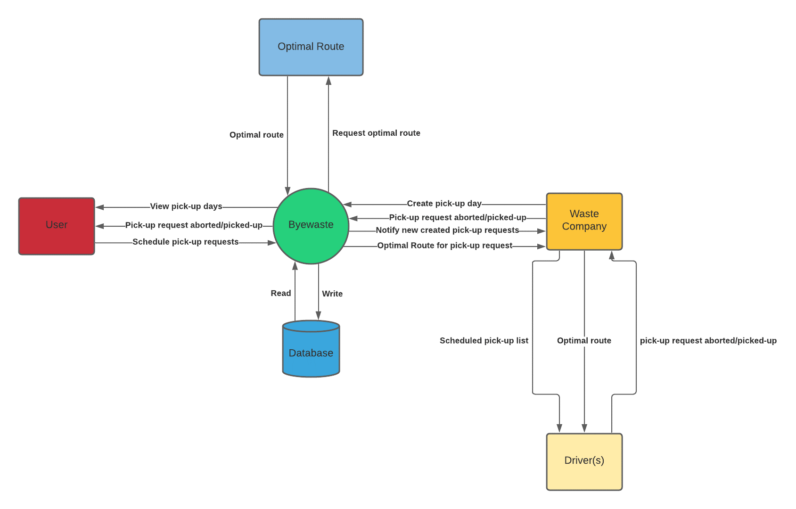
Figuur 5
Mijn collega’s vinden dat ik de context diagram goed heb gemaakt waarbij ik de verschillende entiteiten aantoon en de datastromen tussen hen. Met de feedback die ik van hen heb gekregen heb ik een verbeterde context diagram. Ik toon aan dat er meerdere bestuurders zijn en niet alleen een, wat terug te zien was in het eerste context diagram. Verder heb ik ook een fout gemaakt bij de datastroom van de gebruiker naar Byewaste waar te zien is dat Byewaste het bevestigen/annuleren van een ophaal naar de gebruiker stuurt, maar dat zou anders om moeten zijn. Ook heb ik de volgorde van de datastromen veranderd waarbij ik de datastromen die dezelfde kant op gaan bij elkaar heb gedaan. Dit allemaal heb ik gedaan om de context diagram makkelijker te begrijpen te maken. Voor het tweede punt van figuur 5, was ik het niet mee eens. Dit punt klopt niet aangezien dit zou beteken dat alle ophaalverzoeken ook gezien kunnen worden door inzamelaar (driver) en dit zou niet zo moeten. Het is de lokale afvalverzamelaar (collector) die deze informatie door geeft aan zijn inzamelaars. Ik heb daarom dit punt niet verwerkt.
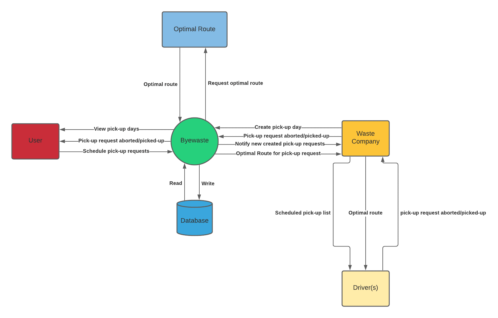